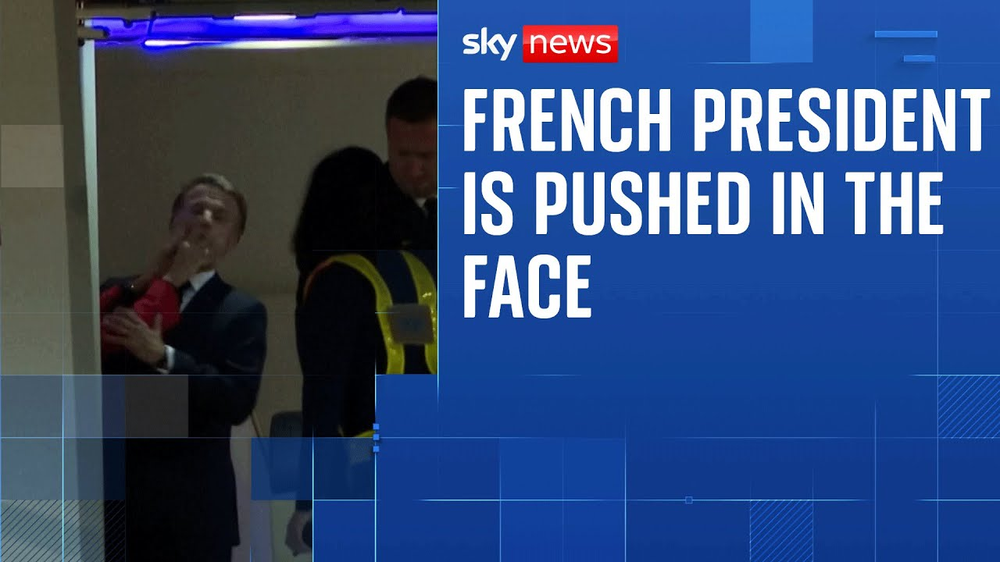

【马克龙总统的妻子似乎用手推了他的脸】
Summary: President Macron downplays an incident where his wife appeared to push his face during their arrival in Vietnam, dismissing it as playful behavior, while media and social media speculate and amplify the moment.
摘要： 马克龙总统淡化了一起事件，在该事件中他的妻子似乎在他们的越南之行中推了他的脸，称这只是嬉闹行为，而媒体和社交媒体则对此进行猜测和放大。

⏱️ Estimated Reading Time: 5 min
President Macron has had to play down an incident in which his wife appeared to push him in the face.
马克龙总统不得不淡化一起事件，在该事件中他的妻子似乎用手推了他的脸。
The couple were arriving in Vietnam for a tour of Southeast Asia.
这对夫妇当时正抵达越南，进行东南亚之行。
As you can see from these pictures here, Mr. Macron said that he and his wife Brjit were just horsing around suggesting the incident have been overblown as some sort of geoplanetary catastrophe.
正如你从这些图片中看到的，马克龙先生表示，他和妻子布丽吉特只是在嬉闹，暗示这一事件被夸大为某种地缘政治灾难。
All right, let's bring in our Europe correspondent Adam Parsons for more on this.
好的，让我们请来欧洲记者亚当·帕森斯，了解更多信息。
Adam, look, it is great to have you here with us and despite the sort of hyperbolic language there used by Macron to play this down, that footage is going to be played on repeats until we hear from him again.
亚当，很高兴你能和我们在一起，尽管马克龙用夸张的语言淡化此事，这段画面仍将被反复播放，直到我们再次听到他的回应。
It probably will be.
很可能会这样。
Yeah.
是的。
I mean, social media is one of those places where Emanuel Macron pops up every now and then uh because there are a lot of haters out there who really really don't like him.
我的意思是，社交媒体是埃马纽埃尔·马克龙时不时出现的地方之一，因为有很多讨厌他的人真的非常不喜欢他。
uh and sees on every opportunity to portray him as either an idiot or a villain or some sort of nerd dwell.
并且抓住每一个机会把他描绘成白痴、恶棍或某种书呆子。
So, previously we've had a suggestion that Emanuel Macron brought a bag of cocaine into a meeting of EU leaders.
所以，之前有人暗示埃马纽埃尔·马克龙带了一袋可卡因参加欧盟领导人会议。
We've had the suggestion that he had a secret handshake with the Turkish president Erdogan.
还有人暗示他与土耳其总统埃尔多安有秘密握手。
And now well whatever this is now obviously there was some kind of something that happened between Manuel M and his wife Breijit as they arrived in Vietnam.
而现在，无论这是什么，显然在曼努埃尔·马克龙和妻子布丽吉特抵达越南时发生了一些事情。
Beyond that there's not an awful lot that we can say for sure.
除此之外，我们无法确切地说出太多。
She pushes him in the face.
她推了他的脸。
Is that because she's angry?
是因为她生气了吗？
Is that because uh she is uh I don't know trying to take an eyelash out of his face.
还是因为她，呃，我不知道，试图从他脸上取下一根睫毛。
Then as they come down the stairs, certainly she seems as if she's not very happy about something, he extends his arm uh as if to offer her support and she ignores that and comes straight down.
然后当他们走下楼梯时，她显然看起来对某事不太高兴，他伸出手臂，似乎是想扶她，但她无视了，直接走了下来。
But whether or not this is a titanic uh event or whether or this is simply two long married people who are having some kind of tiff, well, one imagines it's more likely to be option two.
但这是否是一个重大事件，或者这只是两个结婚多年的人发生的小争执，人们更倾向于认为是后者。
I think in in a sense possibly more interesting than the event is that sort of knock-on.
我认为在某种意义上，比事件本身更有趣的是它的连锁反应。
As you said, this will be played again and again.
正如你所说，这段画面会被反复播放。
There are already I've seen social media accounts examining this frame by frame.
我已经看到社交媒体账号在逐帧分析此事。
Did she assault him?
她是否袭击了他？
Is she furious with him?
她对他很愤怒吗？
What is this shun?
这是什么冷落？
What is this cold shoulder?
这是什么冷淡态度？
Uh there have been any number uh of ludicrous, frankly, conspiracy theories about Breijit Macron uh over the years.
坦白说，多年来关于布丽吉特·马克龙有过许多荒谬的阴谋论。
And so in a sense, what does Emanuel Macron do when confronted this?
所以在某种意义上，埃马纽埃尔·马克龙面对此事会怎么做？
Well, he probably does what he did, which is to laugh it off, to say that this is the latest in a number of conspiracy theories to say that it has been utterly uh overblown.
他可能会像之前那样一笑置之，称这是最新的阴谋论之一，并说此事被彻底夸大了。
But one thing that it will inevitably lead to is more investigation certainly by those uh within I guess particularly the French media who are antagonistic towards the uh the president into exactly what happened aboard the presidential plane before it touched down in Hanoi.
但有一件事是不可避免的，那就是更多的调查，尤其是那些对总统持敌对态度的法国媒体，他们会调查总统专机在河内降落前究竟发生了什么。